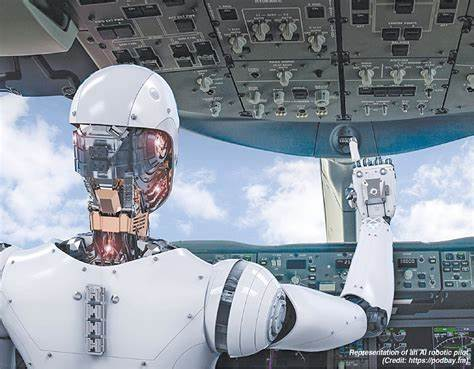

Artificial Intelligence (AI) is rapidly transforming the world as we know it. From self-driving cars to advanced medical diagnostics, AI is revolutionizing various industries and changing the way we live and work. In this blog post, we will explore the future of AI and its potential impact on society.
AI has the potential to revolutionize healthcare by improving diagnostics, personalizing treatment plans, and predicting patient outcomes. Machine learning algorithms can analyze vast amounts of medical data to identify patterns and make accurate predictions. This can lead to earlier detection of diseases, more effective treatments, and better patient care.
Self-driving cars are one of the most exciting applications of AI in transportation. These vehicles use AI algorithms to navigate roads, avoid obstacles, and make real-time decisions. As the technology continues to advance, self-driving cars have the potential to reduce traffic accidents, improve fuel efficiency, and provide greater mobility for people with disabilities.
AI is also transforming the business world by automating repetitive tasks, optimizing supply chains, and enhancing customer experiences. Chatbots and virtual assistants powered by AI can handle customer inquiries, process orders, and provide personalized recommendations. This not only improves efficiency but also allows businesses to better understand and serve their customers.
As AI continues to evolve, it is important to consider the ethical implications of its use. Issues such as data privacy, algorithmic bias, and job displacement need to be addressed to ensure that AI benefits society as a whole. Policymakers, researchers, and industry leaders must work together to develop guidelines and regulations that promote the responsible use of AI.
The future of AI is full of possibilities, and its impact on society will be profound. By embracing this technology and addressing its challenges, we can harness the power of AI to create a better, more efficient, and more equitable world.